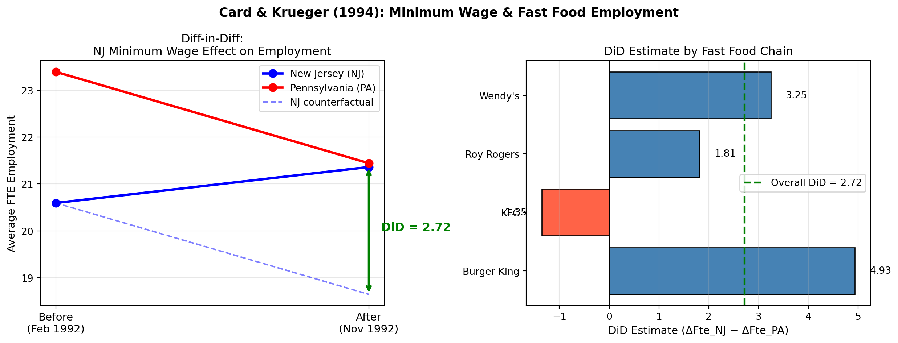

| NJ | PA | Diff (NJ-PA) | |
|---|---|---|---|
| Variable | |||
| FTE employment (wave 1) | 20.60 | 23.39 | -2.80 |
| FTE employment (wave 2) | 21.36 | 21.44 | -0.08 |
| Starting wage (wave 1) | 4.61 | 4.63 | -0.02 |
| Starting wage (wave 2) | 5.08 | 4.62 | 0.46 |
| Hours open per day (wave 1) | 14.42 | 14.54 | -0.13 |
Replication of Card and Krueger (1994)
Minimum Wages and Employment: A Case Study of the Fast Food Industry in New Jersey and Pennsylvania
Introduction
Card and Krueger (1994) is one of the most influential and controversial papers in labor economics. The central question is simple but profound: does raising the minimum wage reduce employment?
Standard economic theory predicts yes, if you raise the price of labor above the market equilibrium, firms will demand less of it. But Card and Krueger challenged this prediction using a clever natural experiment.
In April 1992, New Jersey raised its minimum wage from $4.25 to $5.05 per hour, while neighboring Pennsylvania kept its minimum wage unchanged. The authors surveyed fast food restaurants in both states before (February 1992) and after (November 1992) the policy change, creating a natural treatment group (NJ) and control group (PA).
The key insight is the Difference-in-Differences (DiD) design: \[ \text{DiD} = \underbrace{(\bar{Y}_{NJ,\text{after}} - \bar{Y}_{NJ,\text{before}})}_{\text{NJ change}} - \underbrace{(\bar{Y}_{PA,\text{after}} - \bar{Y}_{PA,\text{before}})}_{\text{PA change}} \]
The PA trend serves as the counterfactual, what would have happened to NJ employment had the minimum wage never changed. The identifying assumption is parallel trends: absent the policy, NJ and PA employment would have moved in parallel.
The finding was shocking to many economists: employment in NJ fast food restaurants increased relative to PA after the minimum wage hike, directly contradicting the standard prediction.
Main Analysis
Table 2: Descriptive Statistics
Card and Krueger surveyed fast food restaurants in New Jersey (NJ) and Pennsylvania (PA) twice — before (February 1992) and after (November 1992) NJ raised its minimum wage from $4.25 to $5.05. Table 2 summarizes key variables by state.
Before the policy (wave 1), NJ and PA stores looked very similar — comparable wages, employment levels, and hours. After the policy (wave 2), NJ starting wages jumped to $5.08, confirming the minimum wage increase was binding. PA wages barely moved. Crucially, FTE employment in NJ rose slightly while PA employment fell — a first hint of the main finding.
Table 3: Diff-in-Diff Estimate
The core of the paper is comparing the change in employment across the two states. If NJ and PA would have followed the same trend absent the policy, any divergence is attributable to the minimum wage increase.
| NJ | PA | NJ-PA | |
|---|---|---|---|
| Variable | |||
| 1. FTE before (wave 1) | 20.60 | 23.39 | -2.80 |
| 2. FTE after (wave 2) | 21.36 | 21.44 | -0.08 |
| 3. Change (after - before) | 0.77 | -1.95 | 2.72 |
SE of DiD: (1.34)
t-statistic: 2.03, p-value: 0.043The DiD estimate is +2.72 FTE (SE = 1.34, p = 0.043). PA employment fell by about 2.0 FTE over this period, reflecting general economic conditions. NJ employment bucked that trend and rose by 0.77 FTE. The difference — 2.72 full-time equivalent workers — is attributed to the minimum wage policy, and is statistically significant at the 5% level.
Table 4, Column (i): OLS Regression
The DiD can be expressed as a simple regression of the change in FTE on an NJ indicator:
\[\Delta \text{FTE}_i = \alpha + \beta \cdot \mathbf{1}[\text{NJ}_i] + \varepsilon_i\]
The coefficient \(\beta\) is the DiD estimate; \(\alpha\) is the average change in PA.
| Coefficient | Std. Error | t-stat | p-value | Sig. | |
|---|---|---|---|---|---|
| Constant (= PA mean change) | -2.064 | 1.034 | -2.00 | 0.047 | ** |
| NJ (DiD estimate) | 2.722 | 1.153 | 2.36 | 0.019 | ** |
The NJ coefficient (+2.722) matches the Table 3 DiD exactly. The constant (−2.064) confirms that PA employment fell on average. Standard errors differ slightly from the paper because Card & Krueger used heteroskedasticity-robust SEs.
Something Additional
Visualizing the DiD

The dashed line shows what NJ would have done absent the policy — the counterfactual. Instead NJ employment rose while PA fell, yielding a causal gap of +2.72 FTE. This gap is precisely the Diff-in-Diff estimate: the minimum wage increase is credited with raising fast food employment in NJ by 2.72 full-time equivalent workers relative to what would have happened otherwise.